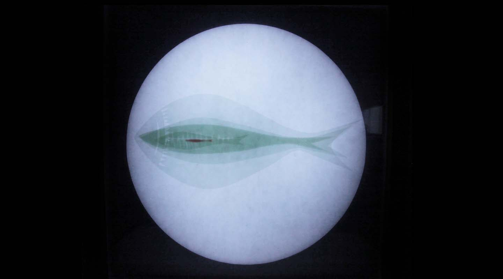

绽喜
「昔酉•绽喜」
全球化时代的当下，随着人们生活习惯和消费观念的改变，本土民间艺术逐渐失去了自身生存的土壤。如何让“老”的东西重新焕发生命力？传统民间艺术如何在物欲纵流的现代社会找到自己的一席之地？这需要更多人的关注和不断的尝试与探索。此次设计，作者从传统民间剪纸中汲取养分，经过再设计，尝试通过新材料、新媒介、新的视觉呈现方式等，试图探讨传统民艺在当下的多种可能，尝试在旧与新之间搭建一座桥梁，同时引发更多人的关注与思考。